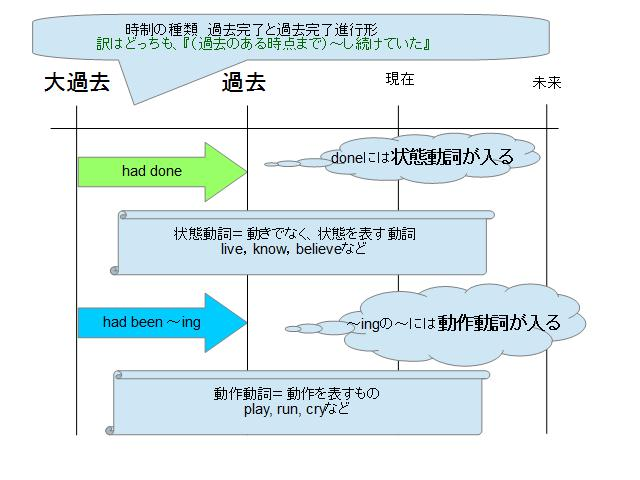
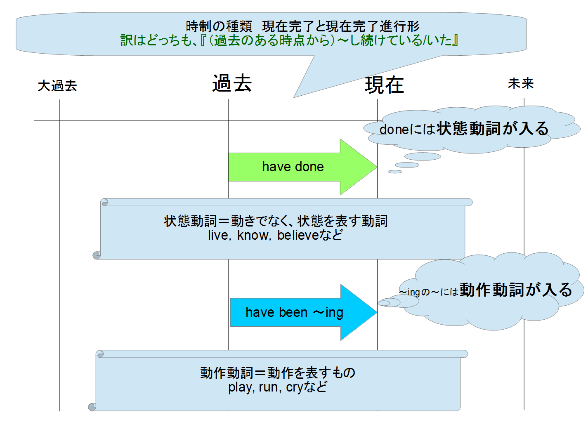
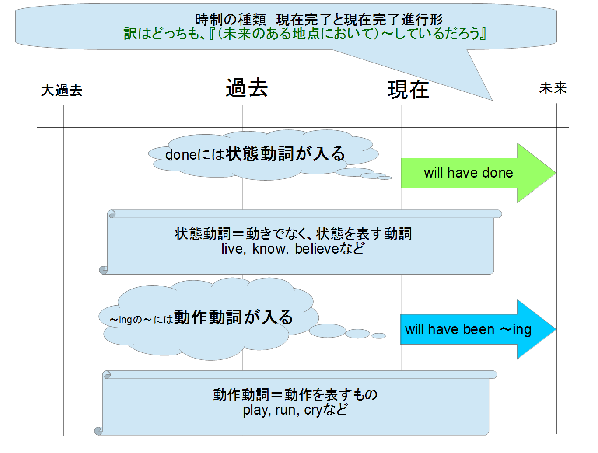

Server Top
★英語！！時制（選択肢問題）を解くテクニック！★
センター試験や大学入試或いは、英語の問題集で必ずと言っても良いほどよくでる時制の問題！！
テクニックは2つだけ！
① 副詞と動詞をチェック（時制の問題は副詞⇒動詞の順番で注目してみると大概解けます！）まずは、時制の選択肢問題で！
例題！！Ｎｏｗａｄａｙｓ ｈｉｓ ｆａｔｈｅｒ （ ）ｔｏ ｗｏｒｋ ｂｙ ｃａｒ．（摂南大）
②． ｗｅｎｔ
③． ｉｓ ｇｏｉｎｇ
④． ｇｏｅｓ
〔ヒント〕
1)副詞（Nowaday）をチェックしましょう。Nowaday（近ごろ、今日では、最近は）、現在の習慣や事実を述べる副詞です。
2）動詞の時制を見てみましょう!①過去②過去③未来④現在です。
（大）過去時制の説明
現在時制の説明
未来時制の説明
時制の一覧です今回はすべては解説できませんが、この表が受験などの役に立てば幸いです！！
時制には、先に述べた通り4つの項目があります。そしてその中に6つに派生します。
1 大過去から過去のある時点までを表すのが、『過去完了形』と『過去完了進行形』です。
まずは、時制の選択肢の入試問題で！
問1 We (____) for nearly thirty minutes when the train arrived. (獨協大)2. have been waiting
3. have waited
4. will have waited
2. were
3. had ever been
4. had gone
2 過去から現在のことを表すのが、『現在完了形』と『現在完了進行形』

『入試問題』
問1 I (＿＿) for a present for my teather since last week , but I can't find one yet. （関東大学院）
2. have been looking
3. am looking
4. was looking
問2 Simon (＿＿＿) 12 filims, and I think his latest is the best. （慶應大）
2. had made
3. has made
4. was making
3 未来のある時期にする予定を表すのが『未来完了形』『未来完了進行形』

『入試問題』
問1 Next Sunday he (____) in Kobe for three years. （東北学院大）
2. stays
3. will stay
4. will have stayed
問2 How long (___) here by the end of next year? （亜細亜大）
2. are you working
3. you will have worked
4. will you have been working